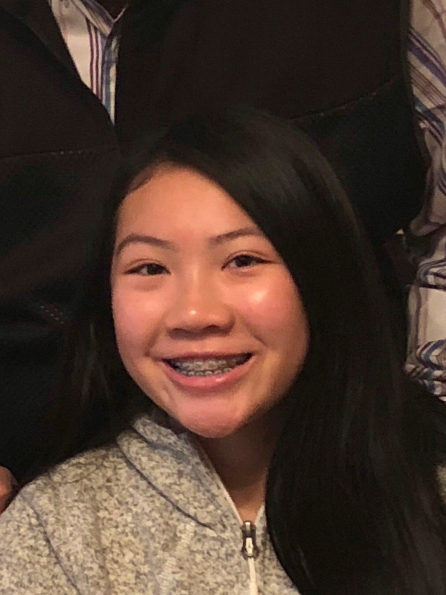

Sabrina Lee
6 Rocky Lane Medfield, MA, 02052
508-530-1663
binaboo1206@gmail.com
15 years old (born December 6, 2002)

About Me
Hi! My name is Sabrina Lee. I am fifteen years old and part of a family of five; including my dog named Daisy. My older brother, Jarrett, is eighteen years old and though in college, still serves as a good role model for me. I am currently in my freshman year at Medfield High School and am looking for a job.
Work Experience
While not yet having any work experience, I am hoping to be hired to gain the responsibility it will teach me to have. I am a student who is patient and can work well with both others or alone. I pay attention to detail and make sure any task given is completed to the best of my ability. I make sure to prioritize and maintain my commitments. Before entering high school, I was a Girl Scout for 9 years which gave me experience both in nature and social aspects.
Academic Achievements
6th grade: Distinction
7th & 8th grade: Recognition
9th grade:
- Honors Geometry, English, and Biology
- Semester 1 weighted GPA of 4.02
- Semester 1 unweighted GPA of 3.86
- Chosen for the American Math Competition
- Computer Science leader
- Can code in JavaScript and a little HTML
- Can use Adobe PhotoShop and Illustrator
Extra Curricular Activities
- JV2 volleyball for MHS
- JV and Varsity softball for MHS
- Metrowest Volleyball
- Piano with Merry Melody Music Academy for 8 years (additional 2 years prior)
- Girl Scouts from Kindergarten to 8th grade
Trophies
- Volleyball: New England Region First Place medal
- Softball: 4 trophies- 3 finalist trophies and 1 MVP trophy
- Piano: 9 trophies, 1 medal- including 2 Shining Star Awards, 1 People's Choice Award, and 1 NMCP Participant medal
- Soccer: 4 tropies, 1 medal- including 2 Friends vs. Friends trophies, 2 team trophies, and 1 finalist medal
- Gymnastics: 1 trophy and 6 medals
- Dance: 2 medals